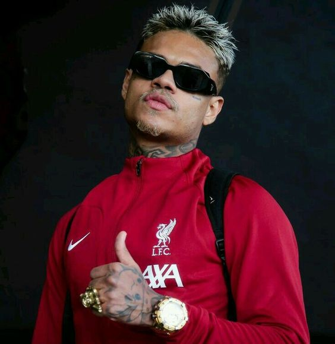
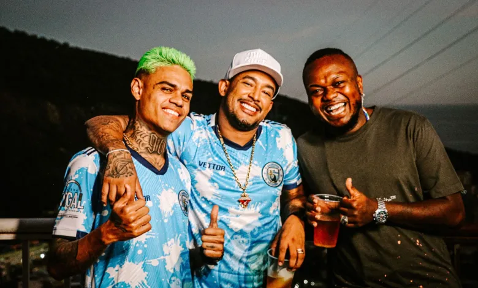

gênero musical de Cabelinho
é classificado primariamente como trap. Se destacando por misturar o rap e o funk em suas músicas, dois gêneros oriundos da periferia. Ao mesmo tempo que traz a conscientização nas letras, ele também defende o lançamento de músicas mais leves O MC também já explorou outros gêneros como: R&B, drill e pagode. Quando está no processo de criação, ele cria diversas de músicas. Muitas vezes ele compõe melodias na hora, e depois faz a letra. Ele cantava na igreja, e tem uma noção de tonalidade.
O MC faz o grande uso de auto tune em suas canções e apresentações ao vivo.
Existe uma militância dentro de sua carreira artística, não apenas de quebrar paradigmas, mas de levar a cultura do funk para outros patamares. Ao fazer com que a elite quebre o preconceito sobre o gênero. Como um jovem negro que conquistou sua emancipação financeira Conquistando cada dia mais seu espaço na cultura brasileira, MC Cabelinho é uma das maiores vozes atuais responsáveis por quebrar estereótipos moldados por conceitos batidos e medíocres.
Influências
Cabelinho tem como principal inspiração artística a cantora inglesa Amy Winehouse, que morreu em 2011. A que dedicou três tatuagens. No antebraço esquerdo, há o rosto de uma Amy adulta e um outro da artista aos cinco anos de idade. Pouco abaixo da orelha esquerda, está escrito “Amy”. "A Amy escreveu sobre tudo que ela viveu, tudo que ela falava nas músicas era real. Ela era muito autêntica, é a voz mais original que eu ouvi até hoje. Eu me identifiquei muito com a Amy, ela não tinha vergonha de falar do sentimento dela nas músicas. Acredito até que o 'Little Love' tenha influência dela", diz. — Cabelinho em uma entrevista para O Globo. Além de Amy Winehouse, o rapper admira grandes astros do trap, como Travis Scott, Quavo e Post Malone. Além do funkeiro MC Orelha, que sempre ouvia a caminho da escola. Começou a rimar porque queria muito ser igual aos MCs antigos, como o Orelha, o Tikão, o Frank e o Smith.
Vida Pessoal
MC Cabelinho e a atriz Bella Campos, com quem contracena na novela Vai na Fé, estiveram em um relacionamento desde outubro de 2022. Em 29 de Agosto de 2023, Bella anunciou o término do relacionamento, após boatos de traição por parte do cantor. "Até o momento estava aguardando um posicionamento público do MC Cabelinho sobre os rumores de traição, mas os homens, de uma forma geral, são isentados desse questionamento, e nós mulheres precisamos sempre nos explicar: se vamos casar, se vamos ter filhos, se vamos nos separar... Então vamos lá: como não tivemos uma mensagem dele falando sobre o ocorrido, eu me proponho a confirmar aqui que não estamos mais namorando em função dos motivos óbvios", escreveu. MC Cabelinho é praticante de jiu-jitsu, atualmente é faixa branca, inclusive já organizou um evento de jiu-jitsu para atletas de comunidades do Rio de Janeiro. A sua música "ringue da vida" possui tanto em letra como no clipe diversas referências ao jiu-jitsu.
Cabelinho Copa Das Favelas